K-Ryan Hinds received his PhD from Liverpool where he worked primarily on core-collapse SNe from ZTF, uncovering connections between their evolution and progenitor system properties. He is currently at Caltech as a Presidential Postdoctoral Fellow. In his free time, he enjoys reading Sci-Fi and fantasy books, playing video games and playing football.
Current Group Members
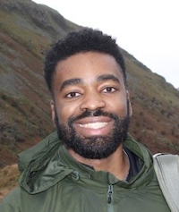
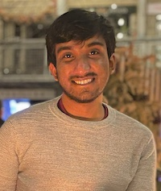
Rahul Jayaraman is a Klarman Postdoctoral Fellow working on multi-wavelength studies of fast transients, using both ZTF and TESS. During his PhD at MIT, he worked on transient detection and characterization using TESS, as well as binary star asteroseismology. Outside of astrophysics, he enjoys climbing, trying new restaurants, and traveling.
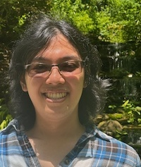
Cassie Sevilla: Cassie is a fourth-year graduate student at Cornell working on fast blue optical transients. Her hobbies include reading and playing video games and board games.
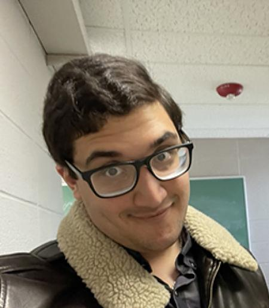
Michael Camilo: Michael received his B.S. in Physics with a concentration in Astronomy from Montclair State University. He is a third-year graduate student at Cornell, working on modelling synchrotron emitting shocks from supernovae. He enjoys trying out new burger spots and watching films in his downtime.
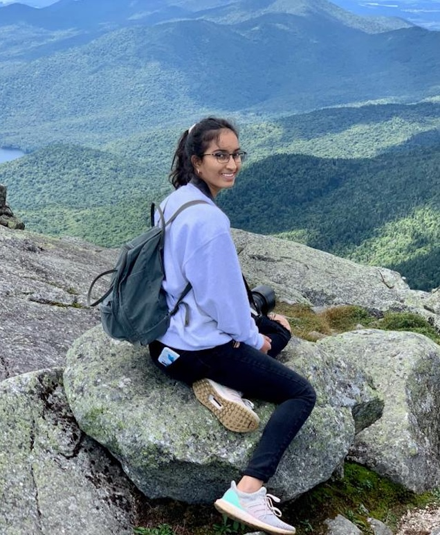
Nitya Nigam: Nitya received her B.A. in Physics and Mathematics from Columbia University in 2025 and her MASt in Astrophysics from the University of Cambridge in 2026. She is a first-year graduate student at Cornell working on collapsar phenomenology. Outside of science, she enjoys performing and listening to music, running, and hiking.
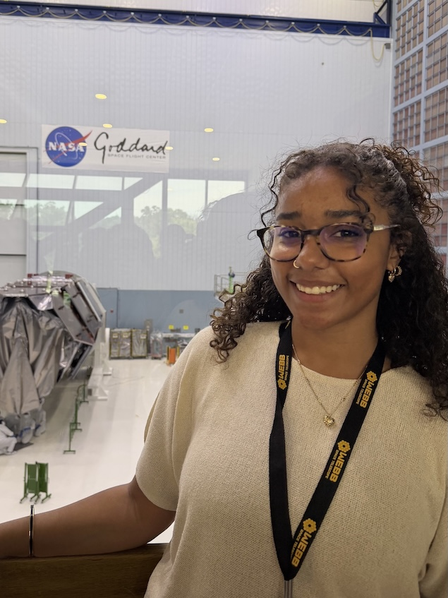
Sarah Opoku: Sarah Opoku is a Postbaccalaureate Researcher conducting studies of radio transients from cm to mm wavelengths using wide-field surveys and targeted observations. She received her B.A. in Physical Chemistry at Northwestern University while conducting historical searches for supernovae following fast radio bursts with the Center for Interdisciplinary Exploration and Research in Astrophysics. (CIERA) In her free time, she loves listening to R&B music, painting, watching Mystery films, playing video games, and traveling!
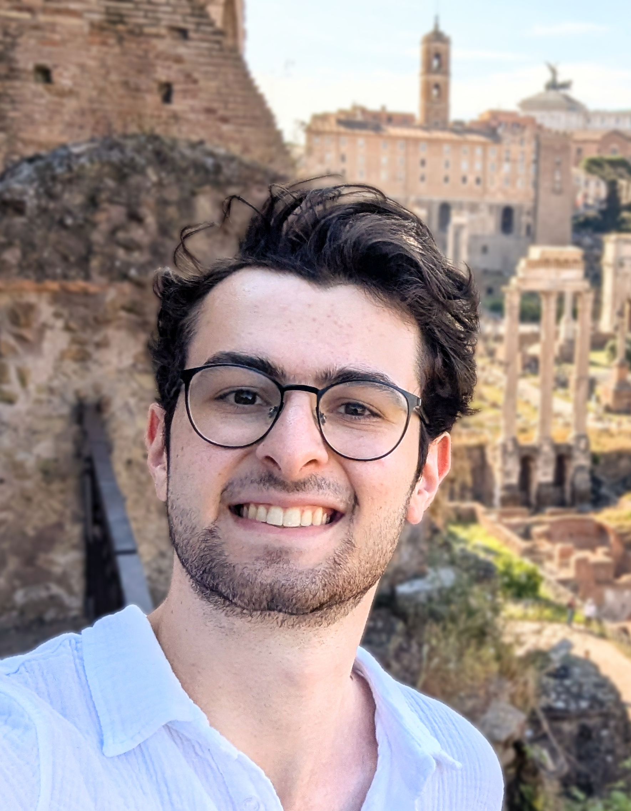
Sam Lakerdas-Gayle: Sam is a postbaccalaureate researcher studying multiwavelength observations of supernovae. His research focuses on modeling radio synchrotron emission to probe the interaction between supernova ejecta and the surrounding circumstellar medium (CSM). He received his BSc at the University of Toronto where he built simulations of a peculiar supernovae to find its ejecta and CSM properties as a postbacc. He also trying new food spots, singing in the Cornell Chorale, and spending time outside.
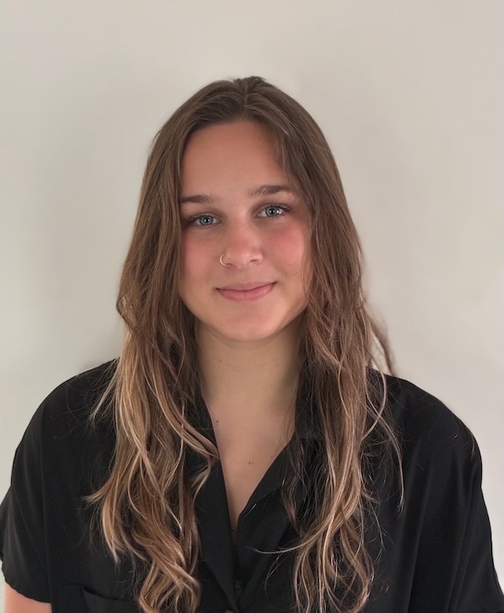
Maya Fanti: Maya Fanti is a Junior at Ithaca College majoring in Physics and minoring in Math and Astronomy. Her research involves matching Zwicky Transient Facility (ZTF) data to Dark Energy Spectroscopic Instrument (DESI) data to investigate properties of transient host galaxies. In her free time, she enjoys rock climbing, kayaking, art, and in general being outside.
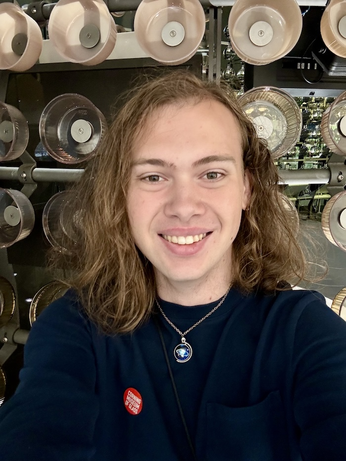
Joshua Roscup: Josh is a junior at Cornell University majoring in physics with an astronomy concentration. His research involves searching for energetic flares in the aftermath of tidal disruption events. He also helps run open houses at the Fuertes Observatory every Friday night as a member of the Cornell Astronomical Society. In his free time, he enjoys theater arts, karate, video games, brisk walks, and being a self-proclaimed connoisseur of iced mochas.
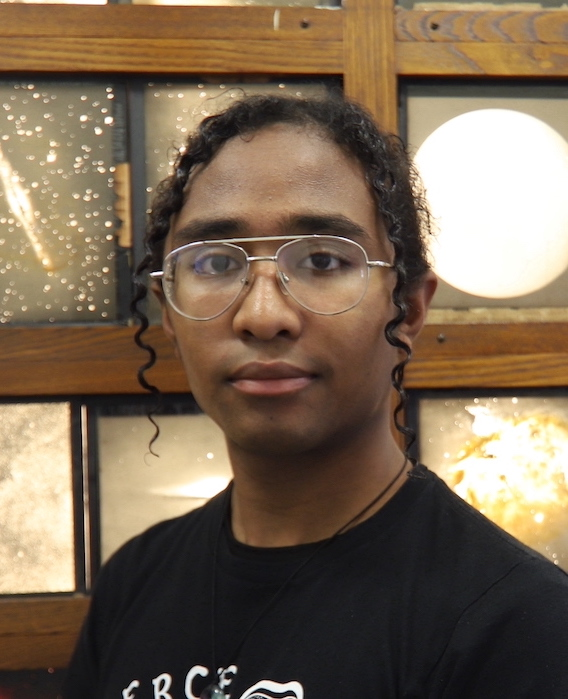
Marquice Sanchez-Fleming: Marquice is a senior at Cornell majoring in physics and minoring in astronomy. His research with Professor Anna Ho is on cross-matching data from the ZTF Bright Transient Survey with radio the VLA Sky Survey. He is also a keyholder and club member of the Cornell Astronomical Society, which entails helping to run open houses at the Fuertes Observatory every Friday night. In his free time, he enjoys reading physics textbooks, playing badminton, engaging in ameteur radio astronomy, and fixing telescopes.
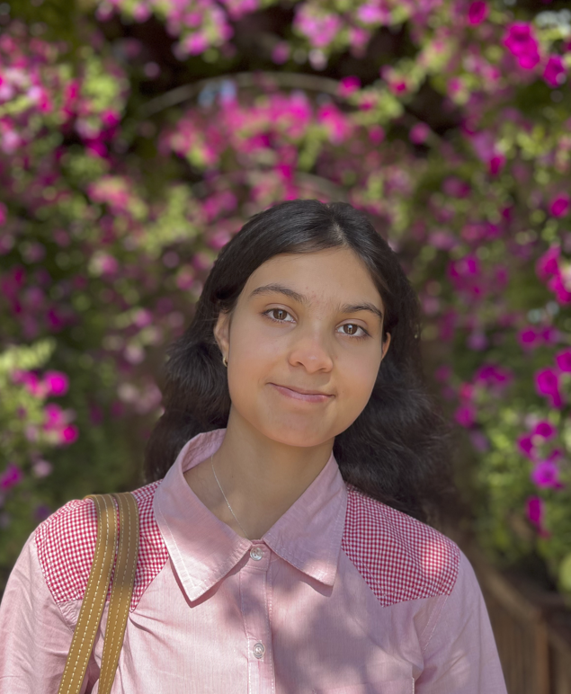
Amaliya Atamalibekova: Amaliya is a sophomore at Cornell University majoring in physics with a concentration in astronomy. Her research involves looking for sub-threshold Gamma-Ray Bursts during Ic-Broadlined Supernova explosions. She also teaches a class on stellar nucleosynthesis with the Splash! At Cornell program. In her free time, she enjoys studying Japanese, drawing, and reading fantasy novels.

Beilin Liu: Beilin is a junior at Cornell University majoring in computer science. She is working on maintaining and improving the web application for classifying transients. In her leisure time, she enjoys movies, music, and books.
Alumni
- Genevieve Schroeder: Postdoc; now SKA Scientist at the University of Toronto
- Maggie Li: Undergraduate; now PhD student at Caltech
- Jada Vail: Undergraduate; now at Epic Systems
- Kailai Wang: Undergraduate; now AI Research Engineer at Apiphany
- Jack Pope: Undergraduate
- Harlan Phillips: REU student; now a student at UC Berkeley
- Joshua Grajales: REU student; now a student at Columbia University